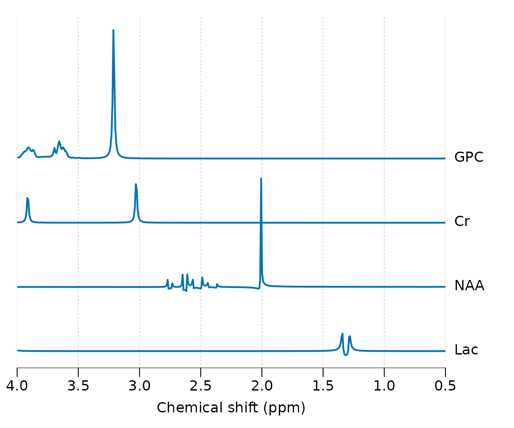
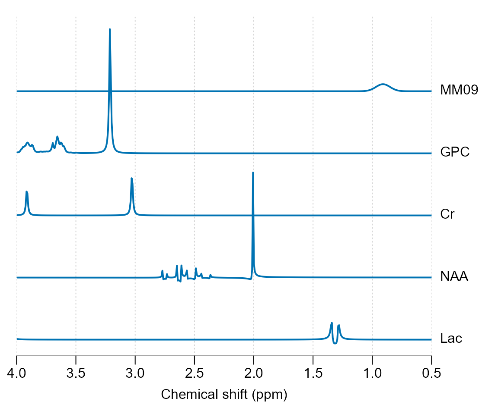
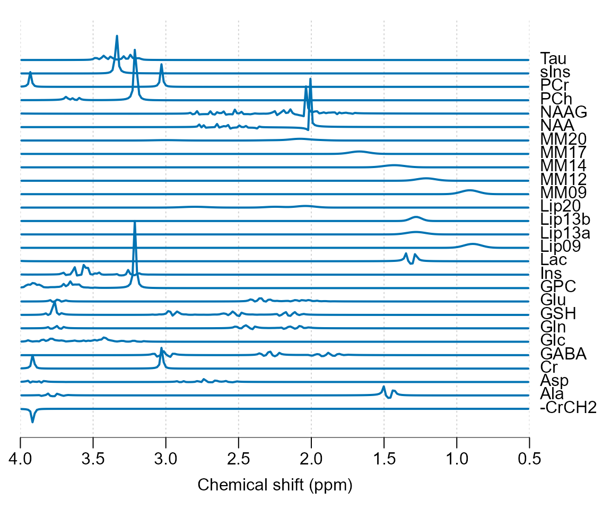
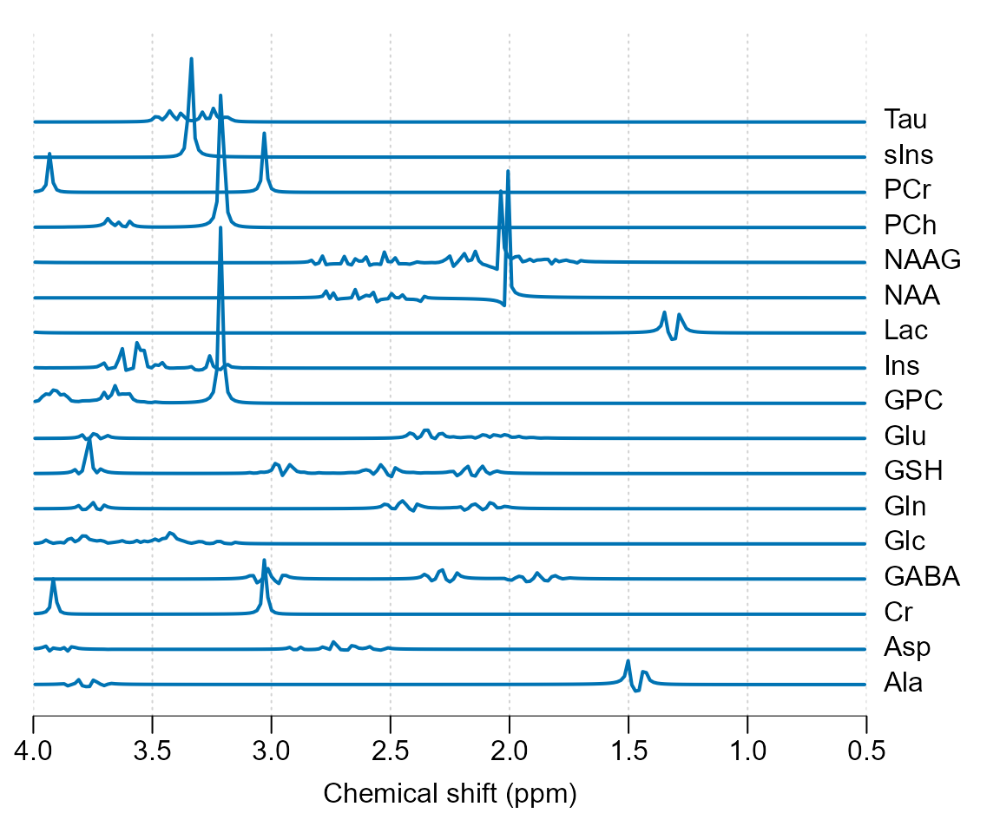

Basis simulation is necessary step for modern MRS analysis and the this vignette will explain how to achieve this with spant. It is advisable to follow the examples given in the metabolite simulation vignette before following this guide.
Load the spant package:
A basis set is a collection of signals to be fit to the MRS data. In spant we start with a list of molecular definitions containing the relevant information for each signal - such as chemical shifts and j-coupling values:
mol_list <- list(get_mol_paras("lac"),
get_mol_paras("naa"),
get_mol_paras("cr"),
get_mol_paras("gpc"))In the next step we convert these chemical properties into a collection of signals (a spant basis_set object) with the sim_basis function. When fitting, the signal parameters (e.g. sampling frequency) and pulse sequence (e.g. echo-time) must match the MRS data acquisition protocol.
basis <- sim_basis(mol_list, pul_seq = seq_slaser_ideal,
acq_paras = def_acq_paras(N = 2048, fs = 2000, ft = 127.8e6),
TE1 = 0.008, TE2 = 0.011, TE3 = 0.009)
stackplot(basis, xlim = c(4, 0.5), y_offset = 50, labels = basis$names)
In 1H MRS broad resonances from lipids and macromolecules are often included in addition to metabolites:
mol_list_mm <- append(mol_list, list(get_mol_paras("MM09", ft = 127.8e6)))
basis_mm <- sim_basis(mol_list_mm, pul_seq = seq_slaser_ideal,
acq_paras = def_acq_paras(N = 2048, fs = 2000, ft = 127.8e6),
TE1 = 0.008, TE2 = 0.011, TE3 = 0.009)
stackplot(basis_mm, xlim = c(4, 0.5), y_offset = 50, labels = basis_mm$names)
Note the field strength is often required to simulate these broad resonances as their linewidth is usually specified in ppm. spant also includes the functions sim_basis_1h_brain and sim_basis_1h_brain_press to produce commonly used sets of basis signals:
sim_basis_1h_brain() %>% stackplot(xlim = c(4, 0.5), y_offset = 20, labels = .$names)
Basis sets can be exported for use with LCModel with the write_basis function, and sim_basis_1h_brain has the option lcm_compat to remove signals that are usually generated within the LCModel package:
sim_basis_1h_brain(lcm_compat = TRUE) %>%
stackplot(xlim = c(4, 0.5), y_offset = 20, labels = .$names)